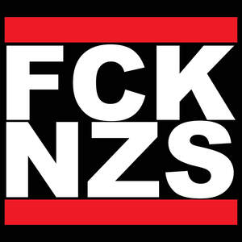

Trade Mark Journal No.2025/024 13 June 2025
UK00004207744 22 May 2025 (25,35)

The mark consists of the stylised wording "FCK NZS" in bold, white, capital letters, arranged over two lines on a black square background. The logo includes red horizontal rectangles placed above and below the black square. The colours red, white, and black are claimed as elements of the mark. Protection is sought for the configuration, stylisation, and layout of the mark as a whole.
No claim is made to the exclusive right to use the individual letters “F,” “C,” “K,” “N,” “Z,” and “S” apart from the mark as shown.
- Class 25
- Gloves for apparel; Jerseys [clothing]; Clothing; Sportswear; Athletic clothing; Clothing for sports; Sports clothing; Jackets being sports clothing; Ready-to-wear clothing; Knitwear [clothing]; Sports garments; Parts of clothing, footwear and headgear; Men's clothing; Embroidered clothing; Jackets [clothing]; Triathlon clothing; Woolen clothing; Sports clothing [other than golf gloves]; Leisure clothing; Headbands [clothing]; Headbands for clothing; Layettes [clothing]; Clothing layettes; Casual clothing; Clothing for leisure wear; Denims [clothing]; Garments for protecting clothing; Cashmere clothing; Clothing for cycling; Shorts [clothing]; Footwear for sports; Sports footwear; Aprons [clothing]; Golf clothing, other than gloves; Footwear; Wristbands [clothing]; Gloves [clothing]; Gloves as clothing; Athletic footwear; Visors [clothing]; Leather clothing; Clothing of leather; Leather (Clothing of -); Clothing for gymnastics; Windproof clothing; Plush clothing; Playsuits [clothing]; Fishing clothing; Quilted jackets [clothing]; Mufflers [clothing]; Clothing for wear in wrestling games; Outerwear; Clothing for skiing; Latex clothing; Athletics footwear; Knitted clothing; Silk clothing; Furs [clothing]; Water-resistant clothing; Gabardines [clothing]; Clothes for sports; Linen clothing; Shoes for leisurewear; Capes (clothing); Woven clothing; Kerchiefs [clothing]; Women's clothing; Articles of sports clothing; Dance clothing; Oilskins [clothing]; Corsets [clothing, foundation garments]; Footwear for women; Ready-made clothing; Footwear for sport; Footwear for use in sport; Footwear for men; Party hats [clothing]; Footwear [excluding orthopedic footwear]; Maternity clothing; Muffs [clothing]; Jackets (Stuff -) [clothing]; Stuff jackets [clothing]; Belts for clothing; Belts [clothing]; Footwear for snowboarding; Leisure footwear; Golf footwear; Veils [clothing]; Rainproof clothing; Beach clothing; Moisture-wicking sports shirts; Casual footwear; Collars [clothing].
- Class 35
- Retail services connected with the sale of clothing and clothing accessories; Retail services in relation to clothing accessories; Retail store services in the field of clothing; Mail order retail services for clothing accessories.
Kamila Plachetkova